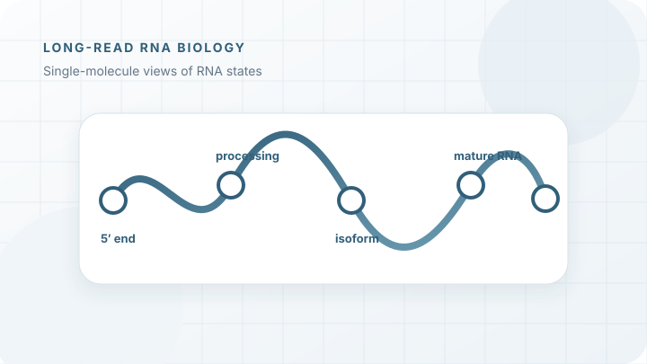
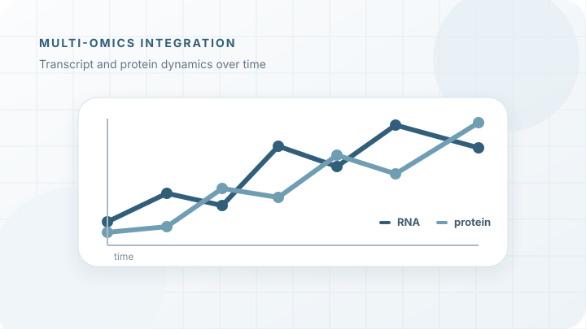
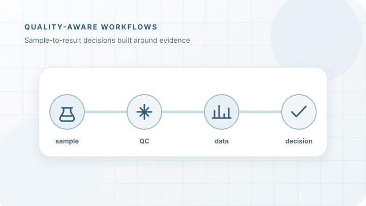

Connecting molecular experiments with reliable, interpretable data
I combine experimental biology with sequencing and quantitative analysis to generate high-quality data from complex biological systems.
My work spans experimental design, sample quality, workflow development, analysis and communication — with a focus on robust methods and clear biological interpretation.
Experimental biology Sequencing & omics Data analysis Reproducible workflows
Move through the steps to see how experiments and analysis connect.
From molecular systems to interpretable data
A broad experimental foundation combined with quantitative analysis, quality-aware workflow development and reproducible scientific computing.
Molecular & experimental biology
Experimental design across molecular biology, microbiology and biochemistry, including nucleic-acid, protein and functional assays.
Analytical workflow development
Method selection, sample preparation, QC criteria, troubleshooting and adaptation to non-standard biological systems.
Sequencing & omics
Short- and long-read workflows for DNA and RNA, from sample preparation and quality control to analysis-ready data.
Data analysis & reproducible workflows
Statistical analysis, visualization and biological interpretation using R, Bioconductor and complementary computational tools.
Work built around questions, quality and interpretation
Each project connects the biological question with the method, the data-quality strategy and the way results are communicated.

Resolving RNA heterogeneity and processing
Nanopore RNA and cDNA workflows developed to reveal transcript boundaries, processing intermediates and complete molecular states.

Following stress responses across molecular layers
Time-resolved integration of transcript and protein data to distinguish immediate regulation from delayed cellular responses.

Designing workflows around data quality
Sample integrity, method fit, controls and documentation considered together before complex workflows move into routine use.
Selected publications
CsmR controls motility and cell shape in Haloferax volcanii
Comparative transcriptomics and ChIP-seq identify a regulator connecting archaeal motility and morphology.
Pan-modification profiling of the thermoregulated ribosomal epitranscriptome
Cross-species analysis of dynamic ribosomal RNA modifications and thermal adaptation.
Single-Molecule Sequencing of RNA
A methods-focused guide to RNA sequencing using single-molecule technologies.